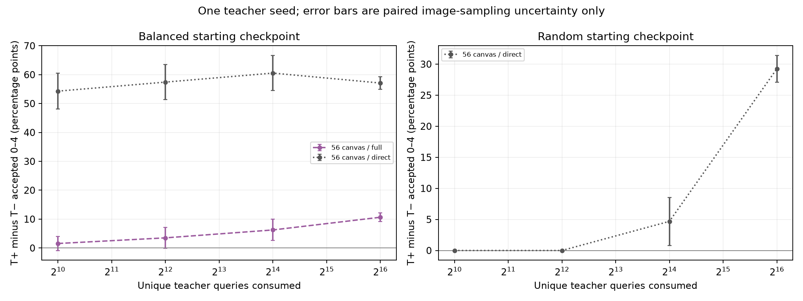
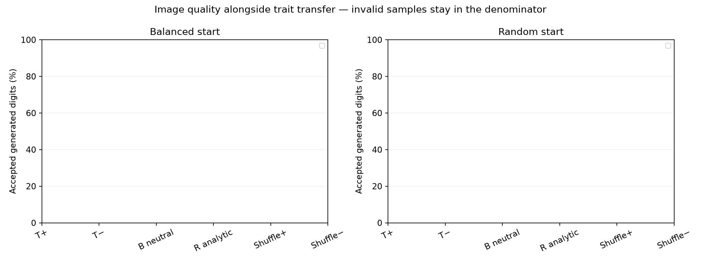

FLOW STUDY · NOISE DISTILLATION · MEASURED DATA
stopped_budget · student_distillation
Readable report · Raw measurements · Protocol


| Model/arm | Canvas | Start | Budget/step | Split | Accepted | Accepted 0–4 |
|---|---|---|---|---|---|---|
| sampler50_neutral / sampler_calibration / pass 1 | 56 | control | 0 | validation | 82.81% | 38.28% |
| sampler100_neutral / sampler_calibration / pass 1 | 56 | control | 0 | validation | 83.20% | 37.89% |
| sampler50_plus / sampler_calibration / pass 1 | 56 | control | 0 | validation | 84.38% | 69.92% |
| sampler100_plus / sampler_calibration / pass 1 | 56 | control | 0 | validation | 84.77% | 70.70% |
| sampler50_minus / sampler_calibration / pass 1 | 56 | control | 0 | validation | 81.64% | 12.11% |
| sampler100_minus / sampler_calibration / pass 1 | 56 | control | 0 | validation | 80.47% | 11.33% |
| reference_neutral / teacher_reference / pass 1 | 56 | control | 65536 | evaluation | 80.55% | 39.70% |
| reference_plus / teacher_reference / pass 1 | 56 | control | 65536 | evaluation | 80.00% | 68.60% |
| reference_minus / teacher_reference / pass 1 | 56 | control | 65536 | evaluation | 81.10% | 10.85% |
| initial_student / baseline / pass 1 | 56 | balanced | 0 | evaluation | 81.25% | 40.62% |
| initial_student / baseline / pass 1 | 56 | random | 0 | evaluation | 0.00% | 0.00% |
| direct_plus / direct / pass 1 | 56 | balanced | 1024 | evaluation | 82.42% | 69.53% |
| direct_plus / direct / pass 1 | 56 | balanced | 4096 | evaluation | 83.59% | 71.09% |
| direct_plus / direct / pass 1 | 56 | balanced | 16384 | evaluation | 85.16% | 73.44% |
| direct_plus / direct / pass 1 | 56 | balanced | 65536 | evaluation | 79.15% | 67.65% |
| direct_plus / direct / pass 1 | 56 | balanced | 65536 | validation | 85.16% | 70.70% |
| direct_minus / direct / pass 1 | 56 | balanced | 1024 | evaluation | 78.52% | 15.23% |
| direct_minus / direct / pass 1 | 56 | balanced | 4096 | evaluation | 78.91% | 13.67% |
| direct_minus / direct / pass 1 | 56 | balanced | 16384 | evaluation | 78.91% | 12.89% |
| direct_minus / direct / pass 1 | 56 | balanced | 65536 | evaluation | 80.30% | 10.55% |
| direct_minus / direct / pass 1 | 56 | balanced | 65536 | validation | 83.59% | 11.72% |
| plus / full / pass 1 | 56 | balanced | 1024 | evaluation | 78.12% | 39.84% |
| plus / full / pass 1 | 56 | balanced | 4096 | evaluation | 79.69% | 43.36% |
| plus / full / pass 1 | 56 | balanced | 16384 | evaluation | 80.08% | 43.36% |
| plus / full / pass 1 | 56 | balanced | 65536 | evaluation | 79.85% | 45.15% |
| minus / full / pass 1 | 56 | balanced | 1024 | evaluation | 78.91% | 38.28% |
| minus / full / pass 1 | 56 | balanced | 4096 | evaluation | 80.08% | 39.84% |
| minus / full / pass 1 | 56 | balanced | 16384 | evaluation | 79.69% | 37.11% |
| minus / full / pass 1 | 56 | balanced | 65536 | evaluation | 80.60% | 34.50% |
| neutral / full / pass 1 | 56 | balanced | 1024 | evaluation | 81.25% | 40.62% |
| neutral / full / pass 1 | 56 | balanced | 4096 | evaluation | 81.25% | 40.62% |
| neutral / full / pass 1 | 56 | balanced | 16384 | evaluation | 81.25% | 40.62% |
| neutral / full / pass 1 | 56 | balanced | 65536 | evaluation | 80.55% | 39.70% |
| direct_plus / direct / pass 1 | 56 | random | 1024 | evaluation | 0.00% | 0.00% |
| direct_plus / direct / pass 1 | 56 | random | 4096 | evaluation | 0.00% | 0.00% |
| direct_plus / direct / pass 1 | 56 | random | 16384 | evaluation | 26.56% | 16.02% |
| direct_plus / direct / pass 1 | 56 | random | 65536 | evaluation | 54.10% | 39.80% |
| direct_plus / direct / pass 1 | 56 | random | 65536 | validation | 53.52% | 36.72% |
| direct_minus / direct / pass 1 | 56 | random | 1024 | evaluation | 0.00% | 0.00% |
| direct_minus / direct / pass 1 | 56 | random | 4096 | evaluation | 0.00% | 0.00% |
| direct_minus / direct / pass 1 | 56 | random | 16384 | evaluation | 21.88% | 11.33% |
| direct_minus / direct / pass 1 | 56 | random | 65536 | evaluation | 50.40% | 10.55% |
| direct_minus / direct / pass 1 | 56 | random | 65536 | validation | 50.00% | 9.77% |
| plus / ring / pass 1 | 56 | balanced | 1024 | evaluation | 77.73% | 39.84% |
| plus / ring / pass 1 | 56 | balanced | 4096 | evaluation | 77.73% | 40.23% |
| plus / ring / pass 1 | 56 | balanced | 16384 | evaluation | 77.34% | 41.41% |
Teacher and student share exact ancestor checkpoints. The main noise-area comparison holds the supervised 240-pixel ring and parameter count fixed. All models generate on the same 56×56 evaluation task. This one-seed pilot does not establish statistical replication.